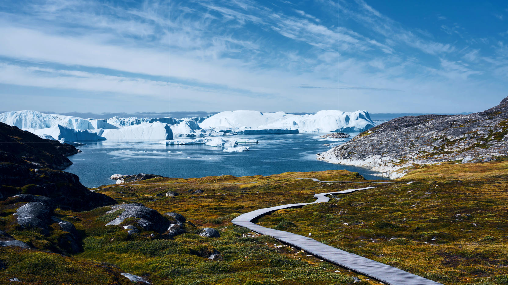
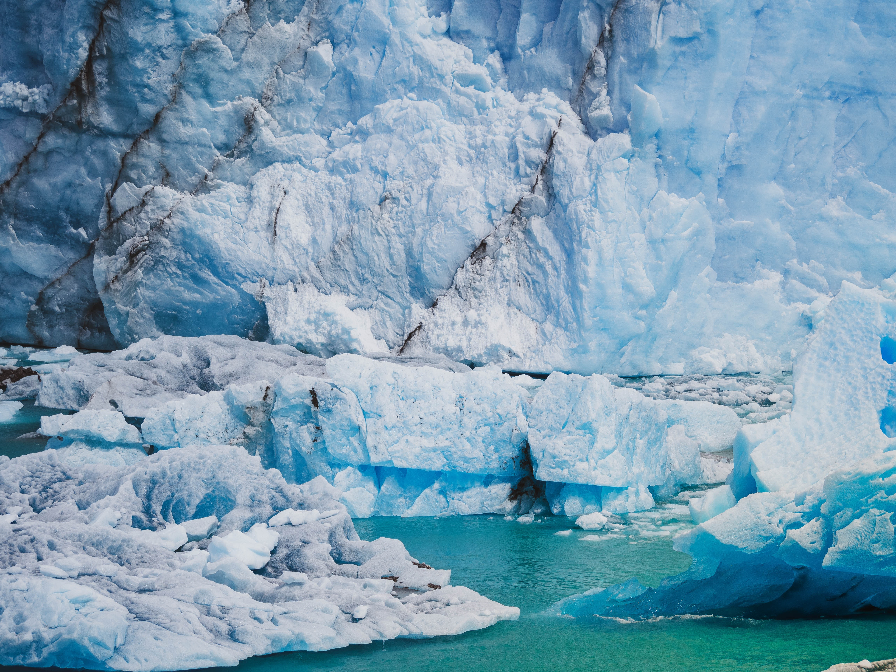
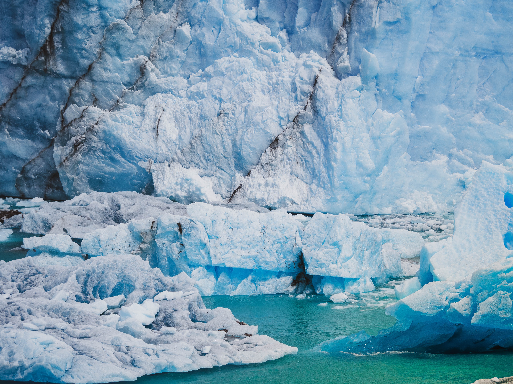

Greenland
The country in North America
Greenland
Thousand-year-old glaciers cover Greenland. They hold back the whole island, but slowly, year after year, they melt. As a result, huge ice edges slide into the ocean and break down with a rumble — this is how a new iceberg is born. On the island, they are the height of a fifteen-story house and up to 40 km in length. Northern harsh beauty is charming, has its own charm, especially when you are not used to it. There are no trees in Greenland at all. The island's miniature towns are like toys. The magical transformation of the ice kingdom takes place in summer when Greenland turns into a blooming and fragrant island — floral bright with a piercing blue sky.

"We can't choose where we come from but we can choose where we go from there"
Nuuk
Nuuk is located in the southwest of the world's largest island, Greenland. The geographical location of Nuuk — the mouth of the Fjord of Good Hope and only 240 km from the Arctic Circle — has determined the harsh climate and the seemingly unsuitable city for tourism. However, this is far from being true. However, the main thing that attracts travelers here is the opportunity to see the famous northern lights, which are exceptionally bright here. It is worth visiting several museums and getting to know the authentic culture of Inuit, the island's native inhabitants.
Ilulissat
Ilulissat is located on the west coast of Greenland, 200 km away from the Arctic Circle. The main tourist attraction of the city is the Ice Fjord, formed by the Sermek-Kujallek glacier and filled with icebergs. Numerous hiking trails pass through magnificent ice caves, where the walls shine and sparkle like diamonds. Therefore, numerous connoisseurs of northern nature and amazing landscapes take appropriate measures to come to Ilulissat. They usually have the opportunity to appreciate the Northern Lights, dog sled tours, as well as igloos or colorful houses, which serve the function of the main characteristic of all the cities of Greenland. Additionally, the city has The Cold Museum and a museum dedicated to the famous native explorer of the Arctic, Knud Rasmussen.
Greenland's National Park
Few places on Earth offer truly pristine wilderness untouched by humans! The Northeast Greenland National Park is one of the last remaining large, protected areas where wildlife, plants, and landscapes are left unspoiled. The National Park is uninhabited by humans apart from the personnel on a few meteorological, research and military stations, among them the headquarters of the elite naval unit Sirius Dog Sled Patrol. The scenery and vast landscapes of the National Park are unparalleled with enormous tundra areas, spectacular mountains and deep fjords filled with icebergs. Although the National Park may be difficult to reach, visitors are rewarded with the unique experience of almost one million square kilometres of the High-Arctic ecosystem.
Kangia
 

Kangia is a fjord and is located in Qeqqata, Greenland. The estimate terrain elevation above seal level is 181 metres.
Fjord
The fjord contains the Jakobshavn Glacier, the most productive glacier in the Northern Hemisphere. The glacier flows at a rate of 20–35 m (66–115 ft) per day, resulting in around 20 billion tonnes of icebergs calved off and passing out of the fjord every year.